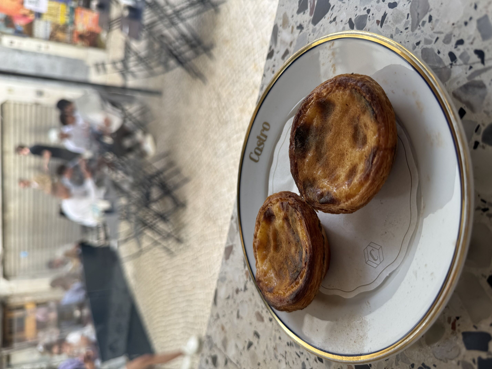
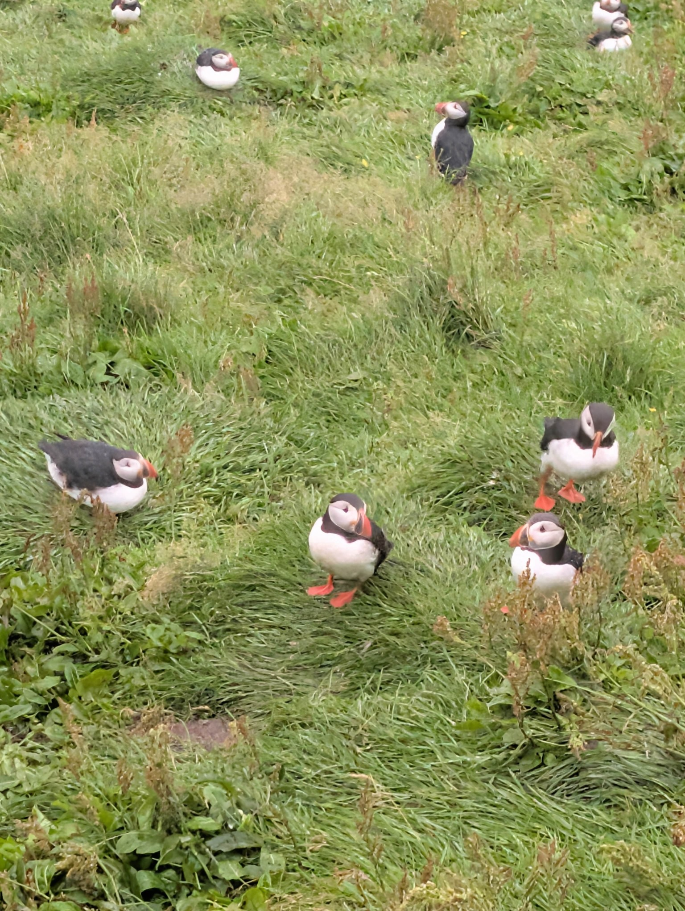
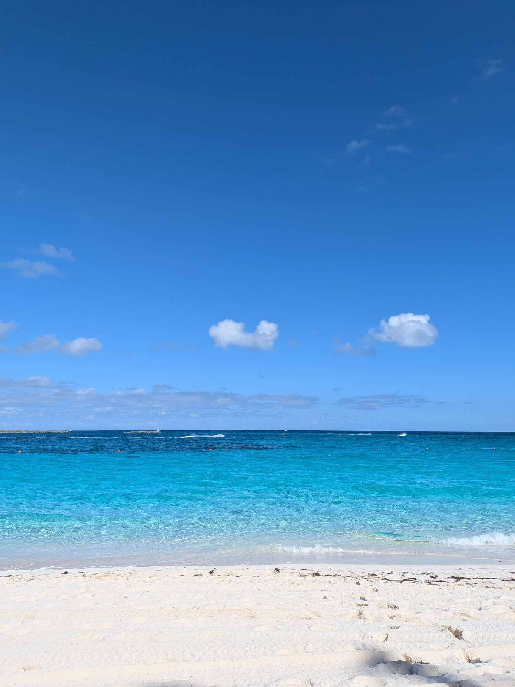

Welcome to my curated collection of discoveries and experiences from 2025. While not everything featured here was
created or opened this year, each entry represents something I personally experienced for the first time in 2025.
These are the highlights that made my year special.
Favorite Bars & Restaurants
Ofício• Lisbon, Portugal
The service felt like you were at a friends house - it welcoming and very conversational.
The wine list is deep and very reasonably priced.
The tapas style menu varied from beef tartare with bone marrow to cod with roasted potato foam.
Each dish was a hit and was easily the best meal we had in Portugal (which says a lot given the number of Michelin star restaurants we visited).
Red Frog Speakeasy• Lisbon, Portugal
We ordered 4 Negroni riffs and each one was a smash.
If it wasn't booked up weeks in advance, we would have gone back multiple times.
Southern Junction• Buffalo, New York
Texas style BBQ with Indian fusion. Weird combo? Maybe. But both James Beard and I love it.
They don't mess with the meats. Zebra style brisket, pork shoulder, and ribs.
But the sides are where they get creative with the Indian fusion. Cardamom cornbread, Chammandhi Slaw, Brisket Biriyani...
Honestly, the Chammandhi Slaw was the best coleslaw I've ever had and should be in the next section...
Favorite Food & Drink
Khoa Soi• Thai Delish
The first time I had Khoa Soi was in Thailand.
I've dreamt about it since then.
A new Thai place near me started offering it, and I've been ordering it every couple of weeks since.
Pastel de Nata• Portugal

Had them all over Portugal, multiple times a day.
Where have they been all my life?
Unfiltered LBV Port
I discovered port this year, through various tastings around Porto.
I tried white, ruby, LBV, tawny, and vintage ports, of different styles and ages.
But I found unfiltered LBV to have the complexity and flavor profile I perfered, at a reasonable price.
Favorite Experiences
Seeing Puffins• Westman Islands, Iceland

Crystal blue water• Nassau, Bahamas

Favorite TV Show
Pluribus
A thought-provoking sci-fi TV show with deep philosophical themes left me thinking about it after each episode.
Easily the best TV show I've watched this year.
Favorite Products
Product Name
Why this product is great...
Favorite Music Listened To
Song Title• Artist
Thoughts on the track...
Favorite Articles Read
Article Title
Summary or key takeaway...
Article Link
Cool Projects I've Seen
Project Name
Why this project is cool...
Project Link
Technologies I'm Excited About
Technology Name
Why this technology is exciting...
Technology Link